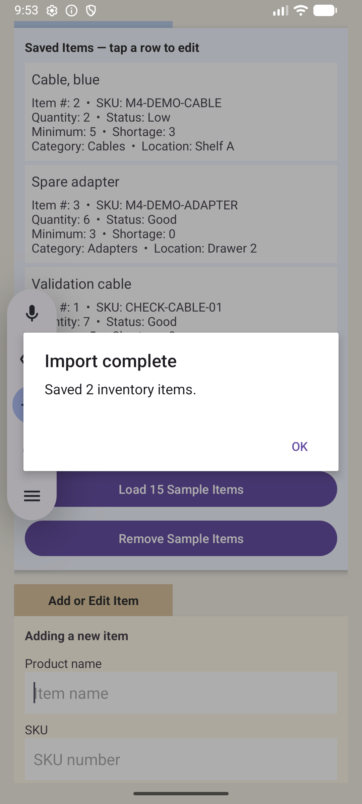
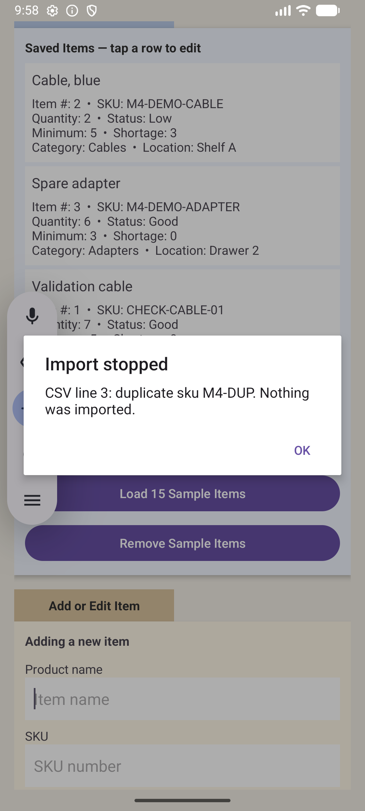
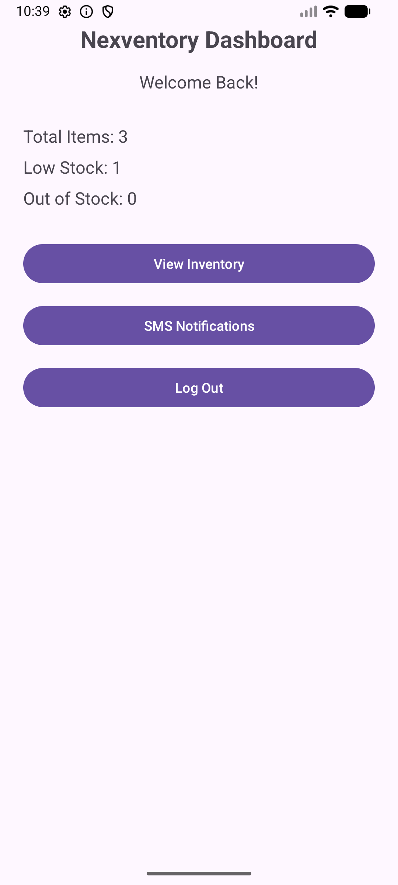

Five course outcomes
The final rubric gives each outcome equal weight. This map connects the evidence to each outcome; it is not an instructor grade or a guarantee of full marks.
| Outcome | Focus | Where the evidence appears | Scope |
|---|---|---|---|
| 1 | Collaboration and organizational decisions | Instructor and terminal engineering example in the self-assessment; recorded code review; preserved snapshots; stakeholder decision record. | Strategies and a real cross-role troubleshooting example are supplied. The capstone itself was developed individually. |
| 2 | Professional communication | Recorded walkthrough, all three readable narratives, self-assessment, source commentary, migration/import pseudocode, and clear navigation. | The video addresses peers or a manager; the web narratives explain user value and the technical evidence in context. |
| 3 | Algorithmic solutions and design tradeoffs | Deterministic restock comparator; list/heap comparison; O(n + k log k) analysis; boundary and randomized checks; all-or-nothing import decision. | Benchmarks are desktop, in-memory measurements. Their scope and repeatability limits are explicit. |
| 4 | Tools and techniques that deliver value | Repository boundary, completed inventory workflows, Room entities/DAOs, background storage work, and repeatable tests. | A practical local Android application; no production deployment or organizational savings are claimed. |
| 5 | Security mindset and protection of resources | Salted password migration; parameter binding; literal-search escaping; validation; bounded files; constraints; rollback; session and permission checks. | Shared inventory, local data protection, and stronger authorization remain limits; SMS delivery and physical-device security were not verified. |
Verification with clear execution boundaries
The final revision reran the dependency-free CSV and algorithm harnesses on October 16, 2026. The Gradle, Room, and emulator results below were recorded during the earlier enhancement work; they were preserved and inspected for this portfolio, rather than rerun as part of the presentation revision.
| Check | Recorded result | When and scope |
|---|---|---|
| CSV harness | 427 assertions passed | October 16 regression; parsing, invalid input, quoted text, and bounds. |
| Algorithm harness | 59,321 assertions passed | October 16 regression; includes repeated checks and 100 randomized inventories. |
| JUnit and simulated Room | 13 tests; zero failures, errors, or skips | October 3 records; 3 Room methods exercise migrations from versions 1, 2, and 3. |
| Connected Android emulator | 6 tests passed | October 3 record; temporary databases, migrations, CRUD, persistence, and rollback. |
| Hands-on application checks | CSV acceptance/rejection, saved edits, restart, search, filters, cancellation | October 3 observations; the full manual checklist was not repeated. |
Read the final regression record · Read the database verification report · Read the algorithm verification report · Read the emulator observations
Decisions a stakeholder can review
The code review establishes the baseline and the planned direction. The following record makes three choices explicit so a reviewer can compare their benefits and costs.
| Decision | Reason | Tradeoff and next step |
|---|---|---|
| Sorted list for full restocking display | A complete, repeatable order is the current user task; the comparator is independently testable. | A heap could suit repeated next-item retrieval. Larger lists need a more efficient screen. |
| Reject the whole invalid CSV batch | The user can trust that every accepted row was saved, or none was saved. | One bad record prevents importing otherwise valid records; the user must correct the file. |
| Explicit Room migrations | Preserve account access, item identity, and historical sequence values. | More migration and test work than recreating tables; invalid legacy data blocks upgrade until corrected. |
Security review and remaining limits
The code review identifies plain-text passwords, destructive upgrade behavior, input failures, and shared inventory as concerns. Enhancements add salted hashes, explicit migrations, bound queries, constraints, import limits, and transaction rollback. These controls anticipate malformed input and unexpected writes rather than assuming the interface always supplies valid values.
The inherited hasher uses PBKDF2WithHmacSHA1 with 120,000 iterations and a random 16-byte salt. This describes the implementation, not a current production recommendation. All accounts still share inventory; login does not create per-account or organization-level isolation. The application does not encrypt its database, and its saved session state is not a comprehensive authorization design. Stronger account policies, access controls, and local data protection require further work before sensitive use.
Recorded application evidence
These screenshots come from the October 3 emulator checks. They show test inventory, not operational organizational data.






Feedback and final revision
The supplied Module Six journal records 40/40 results for the algorithms and database enhancements, with no requested corrections. It records the software milestone as submitted and graded. Separate full instructor rubric exports were not supplied. The final revision preserves the tested technical behavior, expands the website to all required components, adds the professional self-assessment, and clarifies evidence and limitations. Historical submitted documents remain available separately from the final narratives.
The initial plan understated the original account and SQLite functionality. The final presentation uses the actual source baseline. Proposed category/location searches, serialized equipment, barcode lookup, and per-account inventory are not described as completed work.
Final documents and complete source
- Professional Self Assessment — Word document
- Software Design and Engineering Enhancement — Word document
- Algorithms and Data Structures Enhancement — Word document
- Database Enhancement — Word document
- Original code, all enhancement snapshots, and technical evidence
Previously submitted milestone narratives
AI acknowledgment
OpenAI ChatGPT and Codex assisted with development, testing documentation, and the wording and organization of these portfolio materials. The source, recorded verification evidence, and stated limitations are provided for review. AI assistance does not replace evaluation of the implementation or its claims.